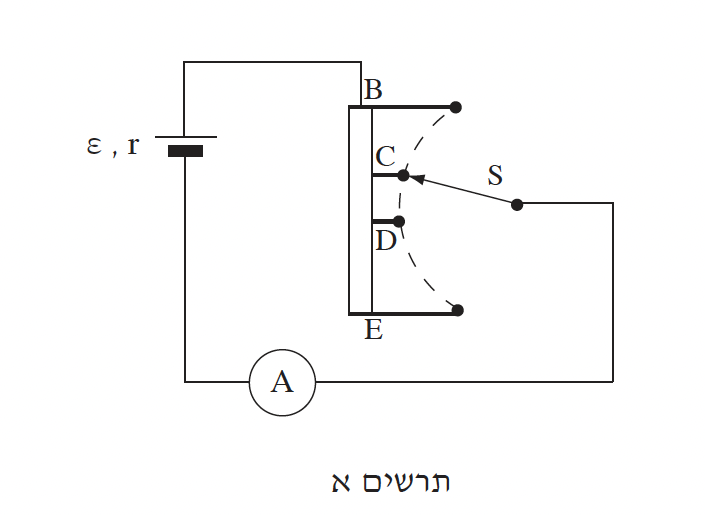
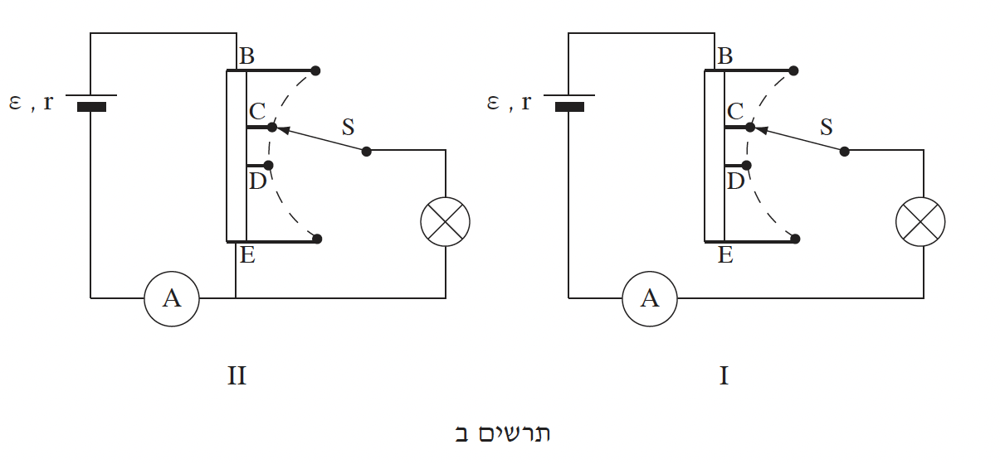

שאלה 2
בתרשים א מסורטט נגד משתנה המחובר אל מקור שהכא"מ שלו ε = 24V וההתנגדות הפנימית שלו r = 2Ω. את המתג S אפשר לחבר לכל אחת מהנקודות B, C, D, E.
המעגל כולל גם מד-זרם שהתנגדותו זניחה.
שימו לב: המתג מחובר תמיד לאחת הנקודות B, C, D, E.

לאיזו נקודה מחובר המתג S, כאשר במעגל נמדדת עוצמת זרם מזערית (מינימלית)? נמקו.
לאיזו נקודה מחובר המתג S, כאשר במעגל נמדדת עוצמת זרם מרבית (מקסימלית)? נמקו.
חשבו את העוצמה המרבית של הזרם במעגל הנתון.
(8 נקודות)
המתג S מחובר לנקודה שקבעתם בתת-סעיף א (1). עוצמת הזרם (המזערית) במעגל היא Imin = 0.8A. חשבו את ההתנגדות של הנגד המשתנה שדרכו עובר הזרם במצב זה.
כאשר מעבירים את המתג לנקודה הסמוכה, עוצמת הזרם במעגל היא I = 1.5 A. חשבו את ההתנגדות של הנגד המשתנה שדרכו עובר הזרם במצב זה.
(10 נקודות)
תלמיד מוסיף נורה למעגל החשמלי שבתרשים א כך שהוא יכול לשנות את עוצמת האור שלה. הוא בודק שתי אפשרויות לחיבור הנורה, I ו-II (ראה תרשים ב).
הניחו שהתנגדות הנורה קבועה.

לאיזו נקודה מחובר המתג S במעגל I, כאשר עוצמת האור של הנורה היא החזקה ביותר? נמקו.
לאיזו נקודה מחובר המתג S במעגל II, כאשר עוצמת האור של הנורה היא החזקה ביותר? נמקו.
(7 נקודות)
על הנורה רשום 24V, 28.8W. חשבו את הספק הנורה במעגל I, כאשר המתג מחובר לנקודה D. (8 1/3 נקודות)